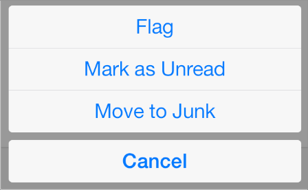
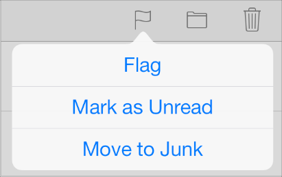

Temporary Views
Alert
경고는 사람들에게 앱 사용이나 장비에 영향을 끼치는 중요한 정보를 제공한다.
경고는 :
요청된 제목과 부가적인 메세지를 디스플레이 한다.
하나 이상의 버튼을 포함한다.
경고가 가끔씩 나타나는 것은 사용자들이 그것을 심각하게 받아들이게 된다. 앱이 디스플레이 하는 경고를 최소화 하는 게 좋으며, 각각이 치명적인 정보와 유용한 선택을 제공하도록 하라.
불필요한 경고를 피하라. 일반적으로, 경고는 다음과 같은 시나리오에서는 불필요하다.
경고가 이런 작업을 한다면... ; |
경고를 사용하기보다 이렇게 하라. |
|---|---|
앱의 기본 기능과 관련된 정보를 제공 ; |
정보를 디스플레이하는, 앱의 스타일과 조화로우면서 시선을 잡아끄는 방식을 디자인하라. |
일반적으로 진행되는 사용자가 하고 있는 테스크의 업데이트 |
프로그레스 뷰나 액티비티 인디케이터를 이용하거나 상태의 정보를 앱 UI와 융합한다. |
사용자가 시작한 테스크에 대한 확답을 요구한다 |
액션 시트를 이용한다. |
사용자에게 그들이 하지 않은 문제에 대해 알린다 |
만약 문제가 심각하지 않다면, 앱의 UI에 그 정보를 융합하고; 아니면 경고를 사용하라. |
경고 텍스트를 디자인하는 가이드라인을 읽으려면, 다음 정의를 알고 있는 게 좋다.
타이틀 스타일 대문자화는 관사(articles), 등위 접속사, 네 글자 이하의 전치사가 첫 번째 단어가 아닌 경우를 제외하고 모든 단어들이 대문자화하라.
문장 스타일 대문자화는 첫 번째 단어가 대문자화되고, 나머지 모든 단어들은 고유 명사(proper noun)나 고유 형용사가 아니라면 모두 소문자다.
상황을 간결하게 설명하고 사람들이 거기에 대해 뭘 할 수 있을 지에 대해 설명하라. 이상적으로, 당신이 쓰는 텍스트는 사람들에게 왜 경고가 나타났고 어떤 버튼을 탭할 건지에 대한 이해를 위한 충분한 컨텍스트를 제공한다.
가능하면, 타이틀을 한 줄에 적을 수 있을 정도로 짧게 유지하라. 긴 경고 타이틀은 사람들이 빨리 읽기 어렵고, 잘리거나 메세지를 스크롤 해야 할 가능성이 있다.
한 단어짜리 타이틀을 피하라. Error 라던지 Warning 같은 한 단어 타이틀은 유용한 정보를 거의 제공하지 못한다.
When possible, use a sentence fragment. A short, informative statement tends to be easier to understand than a complete sentence.
가능하면, 메세지를 더할 필요가 없는 타이틀을 써라. 예를들어,경고 타이틀로 질문을 하면 - 가끔은 두 문장으로 - 메세지를 추가하는 것을 피할 수 있다.
부정적이 되는 것을 망설이지 마라. 사람들은 대부분의 경고가 문제점에 대해 얘기하거나 위험한 상황에 대해 알린다는 것을 이해하고 있다. 부정적이고 직접적이 되는 게 긍정적이지만 완곡한 것보다 낫다.
가능한, "당신", "당신의" , "나를", "나의" 표현을 피하라. 가끔은, 사람을 지칭하는 텍스트가 애매모호 할 수 있으며, 어떤 경우에는 심지어 모욕적이며 거만해 보이게 해석될 수 있다.
대문자화와 구두점을 적절히 사용하라. 특히:
경고창 타이틀이 이러면... |
이렇게 사용하라 |
|---|---|
문장의 단편이거나 질문이 아닌 단일 문장 |
타이틀-스타일의 대문자화와 마침표를 쓰지 않는다 |
단일 문장의 질문문 |
문장자-스타일의 대문자화와 물음표로 마침 |
둘 이상의 문장으로 이루어짐 |
문장-스타일의 대문자화와 각 문장 끝마다 적절한 구두점으로 마침 |
부가적인 경고 메세지를 사용해야 한다면, 짧고 완성된 문장을 사용하라. 가능하면, 메세지를 한 두줄에 디스플레이 될 정도로 충분히 짧게 만들어라. 메세지가 너무 길다면, 스크롤 될 것이며, 사용자에게 후진 경험을 줄 것이다. 문장-스타일 대문자화와 적당한 구두점을 사용하라.
어떤 버튼을 탭할지를 설명하는 경고 텍스트로 경고 텍스트를 늘이지 마라. 이상적으로, 명료한 경고 텍스트와 논리적인 버튼레이블 정도면 사람들에게 상황을 이해하고 선택을 할 충분한 정보를 제공하는 것이다. 보다자세한 가이드를 제공해야 한다면, 아래 가이드라인을 따르라.
선택 액션을 묘사할 때는 "탭"이라는 단어를 사용하라 ("터치", "클릭" 또는 "선택"이라고 하지 마라)
버튼의 타이틀을 따옴표로 감싸지는 말고, 그 대문자화는 유지하라.
경고의 모양을 양 방향 모두에서 테스트 하라 landscape에서는 경고의 높이가 제약되기 때문에, portrait에서의 모양과 달라질 수 있다. 방향에 상관없이 스크롤 없이 읽을 수 있도록 경고문의 길이를 최적화하는 것을 권장한다.
일반적으로, 두-버튼 경고를 사용하라. 두-버튼 경고는 주로 가장 유용하다. 왜냐면 사람들이 두 가지 선택사항 중에서 선택을 할 수 있기 때문이다. 한 버튼 경고는 사용자가 상황을 컨트롤할 수 있는 방법 없이 알려주기만 하는 것이기 때문에 덜 유용하다. 세개 이상의 버튼을 가지는 경고는 두-버튼 경고보다 훨씬 복잡하며 가능한 피해야 한다. 경고에 너무 많은 버튼을 넣는다면, 경고가 스크롤 될 것이며, 나쁜 경험이 된다.
버튼을 적당하게 위치 시켜라. 이상적으로, 자연스럽게 탭 할 수 있는 버튼은 두가지 규범을 지킨다 : 사용자가 가장 원할만한 액션을 수행하는 것과 사용자가 무심코 탭 했을 때 가장 일어나길 회피하고 싶은 문제. 구체적으로 :
좋아하는 버튼은 비 파괴적인 액션을 수행하며, 두-버튼 경고에서 오른쪽에 온다. 이 액션을 취소하는 버튼은 왼쪽에 온다
좋아하는 버튼이 파괴적인 액션을 수행하는 경우, 두-버튼 경고에서 왼쪽에 와야 한다. 이 액션을 취소하는 버튼이 오른쪽에 와야 한다
경고 버튼에는 짧고 논리적인 타이틀이 붙어야 한다. 이상적인 버튼 타이틀은 하나 또는 두개의 단어로 이루어져 그 버튼을 탭 했을 때의 결과를 묘사하는 것이다. 경고 버튼의 타이틀을 만들 때 아래의 가이드라인을 따르라.
모든 버튼 타이틀에, 타이틀-스타일의 대문자화를 사용하고 구두점을 찍지 마라.
가능한, 직접적으로 경고 텍스트와 연관이 있는 동사 또는 동사구를 이용하라 - 예를 들어 "Cancel", "View All", "Reply" 또는 "Ignore"
단순한 승인 옵션 별 다른 대안이 없다면 "OK" 를 사용하라. - "Yes" "No"를 지양하라.
"당신", "당신의" , "나를", "나의" 표현을 피하라 가끔은, 사람을 지칭하는 텍스트가 애매모호 할 수 있으며, 어떤 경우에는 심지어 모욕적이며 거만해 보일 수 있다.
액션 시트
액션 시트는 사용자가 시작한 테스크와 관련된 선택사항을 디스플레이 한다.
아이폰에서, 액션시트는 화면의 아래쪽에서 나타난다.
아이패드에서, 액션시트는 항상 팝오버안에 나타난다.

액션 시트는 :
사용자 액션의 결과를 디스플레이 한다
두개 이상의 버튼을 디스플레이 한다
다음과 같은 작업을 위해 액션 시트를 이용하라 :
테스크를 완료하는 대안적인 방법을 제공한다. 액션 시트는 현재 테스크의 컨텍스트에서 의미가 통하는 범위내의 선택을 제공하며, 그 선택들은 UI에서 영원한 위치는 아니다.
잠재적으로 위험이 있는 테스크를 완료하기 전에 확인을 받는다. 액션 시트는 사용자가 지금 하려는 그 단계에서 영향을 미칠 수 있는 잠재적인 위험을 알리고 대안을 제시할 수 있다.
아이폰에서, Cancel 버튼을 포함해서, 사용자들이 쉽고 안전하게 그 테스크를 버릴 수 있도록 한다. 액션 시트의 맨 아래에 Cancel 버튼을 위치시킴으로서 사용자들이 선택을 하기 전에 모든 선택지들을 읽을 수 있도록 한다.
아이패드에서, 사용자가 테스크를 시작하는 방식에 따라 액션 시트가 디스플레이 되는 방식을 정하라. 구체적으로 :
테스크가 어디에서 시작.. |
액션 시트를 디스플레이.. |
Cancel 버튼을 포함시키나? |
|---|---|---|
팝오버 바깥에서 |
애니메이션 없이 - 즉, 액션 시트와 팝오버가 동시에 보인다. |
아니. 사용자들이 팝오버 바깥을 탭 함으로서 액션 시트를 디스미스 할 수 있기 때문이다. |
팝오버 안에서 |
애니메이션과 함께 - 즉, 액션시트는 팝오버 콘텐트 위를 밀고 들어온다 |
예, 사용자들은 팝오버를 닫지 않고도 액션시트를 디스미스 할 수 있어야 하니까 |
모든 장치에서,잠재적으로 파괴적인 액션을 수행하는 경우 빨간색 버튼을 사용하라. 빨간색 버튼은 액션시트의 제일 위에 디스플레이 하라. 왜냐면 액션 시트 버튼이 위쪽에 가깝게 있을 수록, 더 시선을 끌기 때문이다. 그리고 아이폰에서, 파괴적인 버튼이 액션 시트의 바닥에서 멀 수록, 홈 버튼을 누르려고 준비하다가 탭 해 버리는 경우가 줄어든다.
사용자가 액션시트를 스크롤 하도록 하지 말라. 액션시트에서 너무 많은 버튼을 포함해 버리면, 사용자들은 그들의 선택을 보기 위해 스크롤 해야 할 것이다. 이것은 사용자에게 당황스러운 경험인데, 선택을 구분해 내기 위해 시간을 더 써야 하기 때문이다. 또한, 실수로 버튼을 누리지 않으면서 스크롤하는 것은 매우 어렵다.
모달 뷰
모달 뷰—모달하게 제공되는 뷰- 현재 테스트 또는 워크 플로우에서 내장된(self-contained)기능을 제공한다.
모달뷰는 :
전체 화면을 차지하거나, 아이패드에서는 부모 뷰(팝오버 같은)의 전체 영역을 차지할 수 있다.
테스크를 완료하는 데 필요한 텍스트와 컨트롤들을 가진다.
주로 테스크를 완료하고 뷰를 디스미스하는 버튼과 테스크를 버리고 뷰를 디스미스하는 Cancel 버튼을 디스플레이한다.
앱의 주요 기능과 관련된 테스크를 완성하는 능력을 제공해야 할때 모달 뷰를 사용하라. (역자 주: 앱의 주요 기능과 관련된 어떤 특정한 테스크를 별도로 분리해서 완료해야 할 때 모달 뷰를 사용한다) 모달 뷰는 메인 앱 UI에 항상 포함되어 있지는 않은 어떤 UI 요소들을 요구하는 여러 단계를 가지는 서브테스크에 특히 좋다.
아이패드에서, 현재 테스크와 앱의 시각적이 스타일에 어울리는 모달 뷰의 스타일을 선택하라. 아래에 정의된 스타일 중 어떤 것이든 사용가능하다 :
모달 뷰 스타일 |
모양 |
이럴 때 권장 |
|---|---|---|
풀 스크린 |
전체 화면을 덮는다 |
잠재적으로 복잡한 테스크이며 사람들은 모달 뷰 컨텍스트안에서 완성할 수 있다. |
페이지 시트 |
768 포인트의 고정된 너비를 가진다 ; 시트의 높이는 현재 화면의 높이이다 landscape 에서, 모달 뷰의 양 면을 다 볼 수 있는 영역은 흐려진다. |
사람들이 모달 뷰의 컨텍스트 안에서 끝낼 수 있는 잠재적으로 복잡한 테스크를 제공한다 |
폼 시트 |
540 * 620 포인트의 고정된 공간을 가지며 화면의 중앙에 있다. landscape에서 키보드가 보이는 상태이면, 폼 시트 모달 뷰는 스테이터스 바 바로 아래까지 올라간다. |
사용자로부터 구조화된 정보를 얻어온다 |
현재 컨텍스트 |
그 부모 뷰와 같은 크기를 사용한다 |
모달 콘텐트를 스필릿 팬, 팝오버 또는 다른 전체-화면 뷰가 아닌 곳에 디스플레이 |
아이패드에서, 팝 오버 위에 모달 뷰를 디스플레이 하지 마라. 경고에 대한 예외상황의 가능성이 있기 때문에, 팝 오버 위에는 어떤 것도 디스플레이해서는 안된다. 드문 경우로, 사용자가 팝오버에 한 액션의 결과로 모달 뷰를 디스플레이해야 하는 경우, 모달 뷰를 열기 전에 팝오버를 닫아라.
아이폰에서, 모달 뷰의 전체적인 룩을 당신 앱의 외관에 맞춰라. 예를 들어, 모달 뷰는 종종 네비게이션 바를 포함해서 타이틀과 모달 뷰의 테스크를 취소하거나 완료할 수 있는 버튼을 가진다. 이런 경우, 네비게이션 바는 앱의 네비게이션 바와 동일한 모양을 가져야 한다.
모든 장치에서, 가능하면 테스크를 정의하는 타이틀을 디스플레이 하라. 당신은 또한 뷰의 다른 영역에서 테스크에 대 보자 완전한 묘사를 하거나 가이드를 제공하는 텍스트를 디스플레이 할 것이다.
모든 장치에서, 모달 뷰를 드러내는 적절한 장면전환을 선택하라. 당신의 앱에 맞고, 모달 뷰가 제공하는 임시의 컨텍스트 이동을 사용자가 감지할 수 있도록 돕는 스타일을 사용하라. 이렇게 하기 위해, 다음 장면전환 스타일 중 하나를 지정할 수 있다 :
버티컬. 버티컬 스타일에서, 모달 뷰는 화면 아래 모서리에서부터 밀려들어 오고, 디스미스 되면 다시 밀려 내려간다 (이것이 기본 장면전환 스타일이다)
플립. 플립 스타일에서, 현재 뷰는 수평으로 오른쪽에서 왼쪽으로 뒤집혀서 모달 뷰를 드러낸다. 시각적으로, 모달 뷰는 현재 뷰의 뒷면으로 보인다. 모달 뷰가 디스미스 되면, 이것은 왼쪽에서 오른쪽으로 수평으로 뒤집히며 이전 뷰를 드러낸다.
만약 앱에서 모달 뷰의 장면전환 스타일을 변경하고 싶으면, 사용자에게 의미가 통하는 방식으로 해라. 사용자들은 앱에서 동작적인 차이점을 빠르게 인식하며 그것이 어떤 의미를 가진다고 생각한다. 논리적이고, 일관된 패턴을 세워서, 사용자가 쉽게 감지하고 기억할 수 있게 그리고 특별한 이유 없이 장면전환 스타일을 바꾸지 않는 것이 좋다.
Copyright © 2014 Apple Inc. All rights reserved. Terms of Use | Privacy Policy | Updated: 2014-03-10